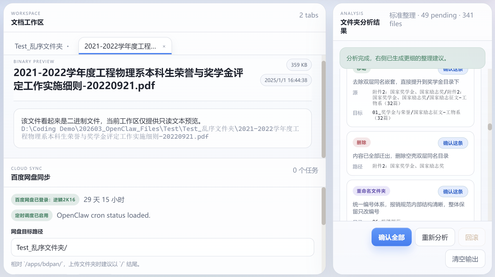
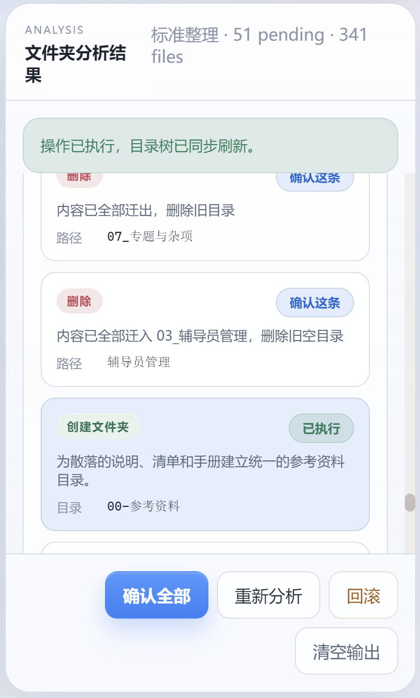

01
目录结构失控
文件长期堆在下载、桌面、聊天接收目录里，分类不一致，后期检索成本越来越高。
OpenClaw Files 不是传统“只会存取文件”的管理器， 而是一个能看懂目录结构、给出整理建议、并安全执行的桌面工作区。
我想解决的并不是“文件很多”本身，而是文件来源越来越杂、目录越来越乱、 用户又缺少长期整理和云端同步习惯时，文件管理会逐渐失控的问题。 这个项目尝试用 AI 分析 + 安全执行链路，把整理这件事变得更低门槛、更可信、更持续。

下载目录、桌面临时文件、聊天接收文件、项目资料常常不断叠加，最终造成目录结构失控。
先扫描目录，再生成建议，再确认执行，并保留回滚能力，让整理过程更安全。
很多用户没有形成长期云同步习惯，因此项目进一步接入百度网盘同步与定时任务能力。
文件整理的真实问题往往不是“不会建文件夹”，而是缺少一种能持续工作、足够安全、又足够低门槛的整理方式。
一旦文件规模大起来，纯手动整理就会很快变成重复劳动。 下载、微信、项目文档、照片视频、临时压缩包都会不断堆积， 最终让“找文件”和“敢不敢整理文件”都变成问题。
文件长期堆在下载、桌面、聊天接收目录里，分类不一致，后期检索成本越来越高。
传统整理依赖逐个判断、逐个拖拽、逐个改名，耗时且容易误删、误移动。
很多用户偶尔会上传文件，但很少建立稳定、自动化、长期运行的云同步机制。
像微信接收文件这类场景，源目录和目标目录分散，重复文件多，手动清理更加困难。
我把目录扫描、AI 方案生成、逐条确认、可回滚执行串成一条完整链路， 让整理不再是一次高风险的黑盒操作。

系统会展示分析摘要、建议分类、可执行操作与执行结果， 支持逐条确认、批量执行、失败自动丢弃以及最近一轮回滚。
这个项目不只做“普通文件夹整理”，而是把高频痛点场景拆开处理， 让工具既能覆盖日常目录，也能覆盖更复杂的专项清理与后续同步。
扫描多级子目录，建立稳定的目录树和文件索引，为后续建议生成提供结构基础。
结合文件名、类型、目录结构和用户补充要求，生成更贴近真实使用习惯的整理方案。
允许先补充“按年份归档”“保留原始合同”等偏好，再发起分析，提升方案匹配度。
支持逐条确认、确认全部、失败自动丢弃和最近一轮回滚，降低用户操作顾虑。
将源目录与目标目录分离，按文件类型归档，自动识别重复文件，适配真实微信场景。
在整理完成后，继续把数据管理链路延伸到云端，补足长期同步和备份能力。
我把产品交互设计成一条容易理解的操作链，尽量让用户每一步都知道当前系统在做什么。
读取当前文件夹结构，生成目录树和基础概览，必要时先补充用户整理要求。
由 OpenClaw 输出结构化整理摘要、建议分类与可执行操作列表。
逐条确认或批量执行，系统会记录结果、处理冲突，并自动丢弃无法执行的建议。
必要时回滚最近一轮变更；整理之后还能继续上传到网盘并建立定时同步任务。
我希望这个项目既能作为通用文件整理工具，也能覆盖聊天文件、执行过程展示和同步管理这些更具体的场景。

用户可以用自然语言补充整理偏好，让 AI 方案不只是“能整理”，而是更贴近自己的目录习惯。

支持独立配置微信源目录与整理目标目录，适合处理来源混杂、重复多、长期堆积的聊天文件。

在本地完成结构治理后，继续接入百度网盘上传和定时任务，让管理从“整理一次”走向“长期维护”。
我不仅关心功能是否可用，也关心用户是否能看懂当前状态、知道下一步怎么做。

整理建议、执行状态、结果输出和回滚能力会在同一条工作链路中串起来，降低用户的不确定感。
用户可以先说明整理偏好，再决定什么时候发起分析。
像微信文件这类高频混乱场景，也能单独配置并进入专项整理流程。
这也是我希望项目最终呈现给用户的价值：不是只给出一段建议文字，而是让目录结构真的变得更清晰、更好找、更容易继续维护。
当用户能在整理前看见问题、在整理后看见结果，工具才真正建立起信任。 这也是为什么我坚持把“分析、确认、执行、回滚、结果展示”做成一条完整链路。
下载文件、聊天文件、临时资料和项目文档堆在一起，后期查找和维护成本都很高。
按规则归档后的目录更容易理解，也更适合继续同步到云端，形成长期可持续的管理习惯。